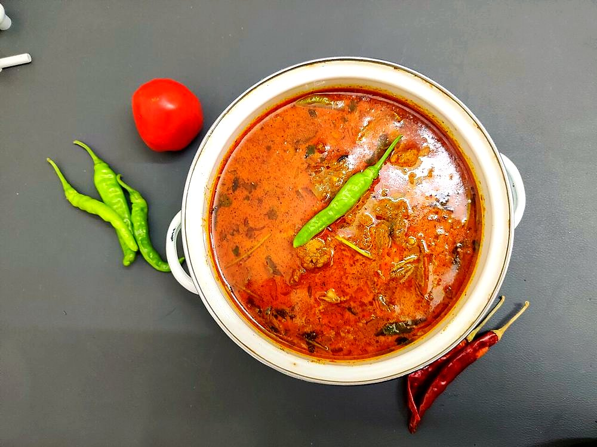

Allergens: none of the ten listed below
Ingredients
Quantities for 4.
- 800g, bone-in, cut into curry pieces Chicken
- 3 medium, finely sliced Onion
- 3 medium, chopped Tomato
- 4cm piece Ginger
- 8 cloves Garlic
- 2, slit Green Chilli
- 3/4 tsp Turmeric
- 2 tsp Kashmiri Chilli
- 3/4 tsp Chilli Powder
- 1 tbsp Coriander Powder
- 1 tsp Cumin Powder
- 1 tsp Garam Masala
- 1 x 3cm stick Cinnamon
- 4 Cloves
- 1.5 tbsp Vinegar
- 1 tbsp, grated Jaggery
- 3 large, cut into fine matchsticks Potatofor the salli
- 3 tbsp, plus 500ml for frying the salli Neutral Oil
- 1/4 cup, chopped Coriander Leavesoptional
- to taste Salt
- 300ml Water
Cookware
stovetop, kadhai
Checked against the ingredient list for ten allergens: milk, egg, fish, crustaceans, tree nuts, peanuts, sesame, mustard, soy and gluten. Brands vary, so read the label on anything new to you.
Before you start
- Rub the chicken with 1/2 tsp turmeric, 1 tsp salt and 1 tbsp vinegar then cover and refrigerate 30 minutes.
- Soak the potato matchsticks in cold water 20 minutes, then drain and dry them completely on a cloth.
- Pound the ginger and garlic together to a paste rather than using them separately.
Method
- Heat 3 tbsp oil with the cinnamon and cloves until the spices swell, about 40 seconds.
- Add the sliced onion and fry 12 minutes over medium heat to a deep even brown.Salt the onion lightly at the start. It draws out water and browns faster.
- Add the ginger-garlic paste and green chilli and fry 2 minutes until the raw edge is gone.
- Stir in the turmeric, kashmiri chilli, chilli powder, coriander powder and cumin powder and fry 45 seconds.Add a splash of water if the pan looks dry; ground spices burn in seconds and turn the gravy bitter.
- Add the tomato and cook 10 minutes, mashing with the spoon, until it breaks down and the oil separates.
- Add the marinated chicken and turn it in the masala over high heat for 5 minutes until it is sealed all over.
- Pour in 300ml water, cover, and simmer 20 minutes until the chicken pulls easily from the bone.
- Stir in the jaggery, remaining vinegar, garam masala and salt and simmer uncovered 5 minutes to a gravy that just coats a spoon.
- Fry the dried potato matchsticks in 500ml hot oil in two batches, 3 minutes each, until pale gold, then drain and salt.Pull them out a shade lighter than you want. They darken as they cool.
- Scatter the coriander leaves over the chicken and heap the salli on top at the table.
Safe temperatures: Chicken and duck are done at 74°C / 165°F, taken at the thickest part and clear of the bone. Reheat leftovers to 74°C / 165°F. FoodSafety.gov
Storage
The gravy keeps 3 days refrigerated; reheat with a splash of water. Keep the salli in an airtight tin at room temperature for up to a week and add them only at serving.
Nutrition Medium estimate
High protein: 48 g a serving, 33% of the calories
| Per serving599 g | Per 100 g | |
|---|---|---|
| Calories | 580 kcal | 97 kcal |
| Protein | 48.3 g | 8 g |
| Carbohydrate | 42.3 g | 7 g |
| of which sugars | 11.1 g | 2 g |
| Fibre | 6.9 g | 1 g |
| Fat | 24.6 g | 4 g |
| of which saturated | 3.5 g | 1 g |
| of which unsaturated | 18.8 g | 3 g |
Ingredients given to taste count as zero, so the real figures run a little higher. Nearest database match used for garam masala, jaggery. Estimated from raw ingredients using USDA FoodData Central.
More like this: Gluten-free Indian recipes · Dairy-free Indian recipes · Parsi recipes
Times, yields, allergens and nutrition are guidance. Use your own judgement on doneness and on storing. More in About.